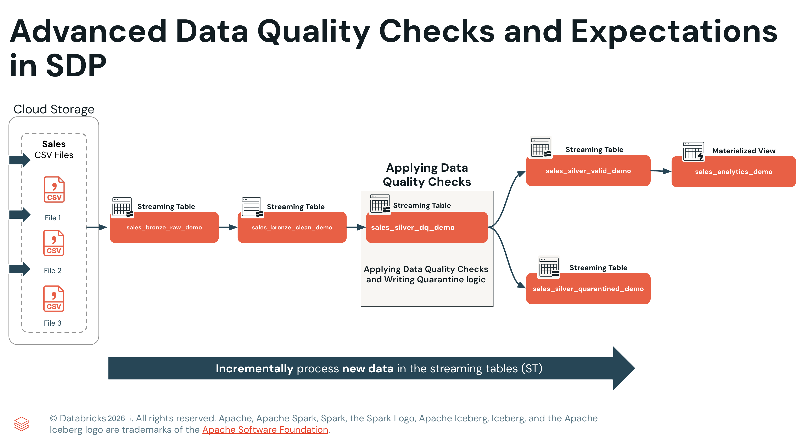

Section 3 · Data Transformation and Modelling · Quelle: Kurs 5, Kapitel 7–8
Kapitel 3 dieser Section hat die drei Verletzungsaktionen von Expectations – WARN, DROP ROW und FAIL UPDATE – anhand einfacher NOT NULL-Prüfungen eingeführt. In produktiven Pipelines reicht das jedoch selten aus: Ein Feld kann vorhanden und trotzdem inhaltlich falsch sein, Regeln müssen sich über mehrere Tabellen hinweg prüfen lassen, und jede gelöschte Zeile bedeutet einen unwiderruflichen Datenverlust ohne Audit-Spur. Dieses Kapitel zeigt, wie sich Expectations für den produktiven Einsatz härten lassen – und stellt mit dem Quarantäne-Muster eine Alternative zu DROP ROW vor, bei der keine einzige Zeile verloren geht.
Eine NOT NULL-Prüfung bestätigt lediglich, dass ein Wert vorhanden ist – nicht, dass er korrekt ist. Ein discount_pct-Feld mit dem Wert 120 besteht jede NOT NULL-Prüfung anstandslos, obwohl ein Rabatt von 120 % offensichtlich unmöglich ist und nachgelagerte Umsatzberechnungen verfälscht. Ähnliche Lücken entstehen bei numerischen Ausreißern (negative Mengen), zeitlichen Inkonsistenzen (Datumswerte aus der Systemvergangenheit), Wertebereichsverletzungen sowie bei Feldern, die zwar optional sein dürfen, aber – wenn vorhanden – bestimmten Regeln genügen müssen. Für all diese Fälle braucht es Ausdrücke, die über eine reine Präsenzprüfung hinausgehen.
Expectations sind nicht auf Prüfungen innerhalb einer einzelnen Zeile beschränkt. Da eine Expectation letztlich ein SQL-Boolean-Ausdruck ist, lässt sich damit auch das Ergebnis einer Materialized View prüfen, die selbst mehrere Tabellen miteinander vergleicht. Zwei Muster sind besonders verbreitet: die Row-Count-Validierung, die nach Joins oder Aggregationen sicherstellt, dass keine Zeilen unbemerkt verloren gegangen sind, und die Prüfung auf Primärschlüssel-Eindeutigkeit, die doppelte Schlüssel aufdeckt, bevor sie nachgelagerte Joins verfälschen:
-- Row-Count-Validierung: stimmen die Zeilenzahlen zweier Tabellen überein?
CREATE OR REFRESH MATERIALIZED VIEW count_verification (
CONSTRAINT no_rows_dropped EXPECT (a_count == b_count)
ON VIOLATION FAIL UPDATE
)
AS SELECT * FROM
(SELECT COUNT(*) AS a_count FROM table_a),
(SELECT COUNT(*) AS b_count FROM table_b)
-- Primärschlüssel-Eindeutigkeit: darf jeder Schlüssel nur einmal vorkommen?
CREATE OR REFRESH MATERIALIZED VIEW report_pk_tests (
CONSTRAINT unique_pk EXPECT (num_entries = 1)
ON VIOLATION FAIL UPDATE
)
AS SELECT pk, COUNT(*) AS num_entries
FROM report
GROUP BY pk
Ein weiterer wichtiger Punkt bei der Formulierung von Regeln: SQL wertet NULL in einem Vergleich als nicht wahr – nicht als falsch, aber eben auch nicht als bestanden. Eine naive Bereichsprüfung wie discount_rate >= 0 AND discount_rate <= 100 markiert dadurch jeden NULL-Wert fälschlich als Verstoß, etwa wenn nach einer Schema-Erweiterung alle historischen Zeilen für die neue Spalte NULL enthalten. Die Lösung ist eine NULL-tolerante Formulierung mit CASE WHEN, die eine Regel nur dann anwendet, wenn der Wert tatsächlich vorhanden ist:
-- NULL-tolerant: prüft nur, wenn ein Wert vorhanden ist
CONSTRAINT valid_discount
EXPECT (
CASE
WHEN discount_rate IS NOT NULL
THEN discount_rate >= 0 AND discount_rate <= 100
ELSE TRUE -- NULL wird akzeptiert
END
)
Die widerstandsfähigste Bronze-Schicht lehnt niemals einen Datensatz wegen eines Typkonflikts ab. Werden alle eingehenden Felder zunächst als STRING gespeichert, akzeptiert die Pipeline, was die Quelle auch immer liefert – ob Ganzzahl, Dezimalzahl oder inkonsistent formatiert – und verschiebt die eigentliche Typdurchsetzung in die Silver-Schicht, wo TRY_CAST bei einem fehlgeschlagenen Cast einfach NULL zurückgibt, statt die gesamte Pipeline zu stoppen. Genau dieses Muster verwendet die Demo-Pipeline in der Bronze-Schicht:
CREATE OR REFRESH STREAMING TABLE dq_1_bronze.sales_bronze_raw_demo
AS
SELECT
CAST(subsidiary_id AS STRING) AS subsidiary_id,
CAST(order_id AS STRING) AS order_id,
CAST(qty AS STRING) AS qty,
CAST(unit_price AS STRING) AS unit_price,
-- Neue Spalten für Schema-Evolution (zunächst NULL)
CAST(order_status AS STRING) AS order_status,
CAST(shipping_cost AS STRING) AS shipping_cost,
-- Rescued-Data-Spalte fängt unerwartete Felder auf
CAST(_rescued_data AS STRING) AS _rescued_data,
_metadata.file_name AS source_file,
_metadata.file_modification_time AS file_mod_time
FROM STREAM read_files(
'${source}',
format => 'csv',
schemaHints => 'order_status STRING, shipping_cost STRING'
);
-- Erst hier, in einer separaten Zwischentabelle, erfolgt die Typisierung
CREATE OR REFRESH STREAMING TABLE dq_1_bronze.sales_bronze_clean_demo
COMMENT "Intermediate table - type casting only, no quality checks"
AS
SELECT
subsidiary_id,
order_id,
TRY_CAST(qty AS INT) AS qty,
TRY_CAST(unit_price AS DOUBLE) AS unit_price,
TRY_CAST(shipping_cost AS DOUBLE) AS shipping_cost,
source_file
FROM STREAM dq_1_bronze.sales_bronze_raw_demo;
Die Option schemaHints kündigt Spalten an, die erst in künftigen Dateien auftauchen werden – historische Zeilen erhalten dafür einfach NULL. Für alles, was darüber hinausgeht und nicht im deklarierten Schema vorgesehen ist, dient die _rescued_data-Spalte (siehe auch Section 2) als letzte Auffanglinie: Unerwartete Felder werden dort als JSON gesammelt statt stillschweigend verworfen.
DROP ROW entfernt ungültige Zeilen unwiderruflich – es gibt keinen Weg zurück. Das Quarantäne-Muster vermeidet diesen Datenverlust vollständig: Jede Zeile wird zunächst geschrieben, ein is_quarantined-Flag markiert per inverser Logik, ob irgendeine Regel verletzt wurde, und erst nachgelagerte Views trennen saubere von fehlerhaften Datensätzen. Die Kernregel dabei: Die Tabelle, auf der das Flag berechnet wird, darf ausschließlich WARN verwenden – würde man dort DROP ROW einsetzen, wären die fehlerhaften Zeilen bereits entfernt, bevor das Flag überhaupt berechnet werden könnte.
CREATE OR REFRESH STREAMING TABLE dq_2_silver.sales_silver_dq_demo
(
-- ... Geschäftsspalten ...
is_quarantined BOOLEAN,
quarantine_reason STRING,
-- Expectations nur mit WARN: kein Datensatz wird entfernt,
-- die Verstöße werden aber im Pipeline-UI sichtbar
CONSTRAINT check_subsidiary_id EXPECT (subsidiary_id IS NOT NULL),
CONSTRAINT check_customer_id EXPECT (customer_id IS NOT NULL),
CONSTRAINT valid_discount_range EXPECT (discount_pct IS NULL OR (discount_pct >= 0 AND discount_pct <= 100))
)
COMMENT "Quarantine table with 6 expectations - supports inverse logic pattern"
PARTITIONED BY (is_quarantined);
CREATE FLOW apply_inverse_logic_flow
AS
INSERT INTO dq_2_silver.sales_silver_dq_demo BY NAME
SELECT
subsidiary_id, order_id, customer_id, discount_pct, -- ... weitere Spalten ...
-- Inverse Logik: TRUE, sobald IRGENDEINE Regel verletzt ist
NOT (
(subsidiary_id IS NOT NULL) AND
(customer_id IS NOT NULL) AND
(discount_pct IS NULL OR (discount_pct >= 0 AND discount_pct <= 100))
) AS is_quarantined,
CONCAT_WS('; ',
CASE WHEN subsidiary_id IS NULL THEN 'Missing subsidiary_id' END,
CASE WHEN discount_pct IS NOT NULL AND (discount_pct < 0 OR discount_pct > 100)
THEN 'Invalid discount_pct (must be 0-100)' END
) AS quarantine_reason
FROM STREAM dq_1_bronze.sales_bronze_clean_demo;
-- Zwei nachgelagerte Streaming Tables trennen die Wege
CREATE OR REFRESH STREAMING TABLE dq_2_silver.sales_silver_valid_demo
AS SELECT * EXCEPT (is_quarantined, quarantine_reason)
FROM STREAM dq_2_silver.sales_silver_dq_demo
WHERE is_quarantined = FALSE;
CREATE OR REFRESH STREAMING TABLE dq_2_silver.sales_silver_quarantined_demo
AS SELECT *
FROM STREAM dq_2_silver.sales_silver_dq_demo
WHERE is_quarantined = TRUE;
Die Tabelle wird bewusst mit PARTITIONED BY (is_quarantined) angelegt: Da die beiden nachgelagerten Tabellen jeweils exakt nach diesem Flag filtern, profitieren sie von Partition Pruning und lesen nur die für sie relevante Partition, statt die gesamte Tabelle zu scannen. Die eigentliche Gold-Schicht baut anschließend ausschließlich auf der validierten sales_silver_valid_demo-Tabelle auf, während die Quarantäne-Tabelle für Root-Cause-Analysen und eine spätere Nachbearbeitung erhalten bleibt.

| DROP ROW | Quarantäne-Muster | |
|---|---|---|
| Ungültige Zeilen | Endgültig gelöscht | In Quarantäne-Tabelle erhalten |
| Audit-Trail | Keiner | Vollständig, abfragbar |
| Nachbearbeitung | Nicht möglich | Regel korrigieren → erneut einsortieren |
| Pipeline-Komplexität | Gering – eine Tabelle | Moderat – eine Basistabelle plus zwei Views |
| Empfehlung | Unkritische Streams mit etablierten Regeln | Produktive Pipelines mit Compliance-/Audit-Anforderungen |